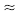
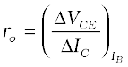
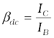
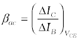
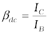
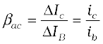
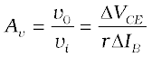
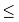
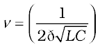
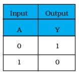

Chapter Fourteen
SEMICONDUCTOR ELECTRONICS: MATERIALS, DEVICES AND SIMPLE CIRCUITS

Devices in which a controlled flow of electrons can be obtained are the basic building blocks of all the electronic circuits. Before the discovery of transistor in 1948, such devices were mostly vacuum tubes (also called valves) like the vacuum diode which has two electrodes, viz., anode (often called plate) and cathode; triode which has three electrodes – cathode, plate and grid; tetrode and pentode (respectively with 4 and 5 electrodes). In a vacuum tube, the electrons are supplied by a heated cathode and the controlled flow of these electrons in vacuum is obtained by varying the voltage between its different electrodes. Vacuum is required in the inter-electrode space; otherwise the moving electrons may lose their energy on collision with the air molecules in their path. In these devices the electrons can flow only from the cathode to the anode (i.e., only in one direction). Therefore, such devices are generally referred to as valves. These vacuum tube devices are bulky, consume high power, operate generally at high voltages (~100 V) and have limited life and low reliability. The seed of the development of modern solid-state semiconductor electronics goes back to 1930’s when it was realised that some solid-state semiconductors and their junctions offer the possibility of controlling the number and the direction of flow of charge carriers through them. Simple excitations like light, heat or small applied voltage can change the number of mobile charges in a semiconductor. Note that the supply and flow of charge carriers in the semiconductor devices are within the solid itself, while in the earlier vacuum tubes/valves, the mobile electrons were obtained from a heated cathode and they were made to flow in an evacuated space or vacuum. No external heating or large evacuated space is required by the semiconductor devices. They are small in size, consume low power, operate at low voltages and have long life and high reliability. Even the Cathode Ray Tubes (CRT) used in television and computer monitors which work on the principle of vacuum tubes are being replaced by Liquid Crystal Display (LCD) monitors with supporting solid state electronics. Much before the full implications of the semiconductor devices was formally understood, a naturally occurring crystal of galena (Lead sulphide, PbS) with a metal point contact attached to it was used as detector of radio waves.
In the following sections, we will introduce the basic concepts of semiconductor physics and discuss some semiconductor devices like junction diodes (a 2-electrode device) and bipolar junction transistor (a 3-electrode device). A few circuits illustrating their applications will also be described.
On the basis of the relative values of electrical conductivity (σ) or resistivity (ρ = 1/σ), the solids are broadly classified as:
(i) Metals: They possess very low resistivity (or high conductivity).
ρ ~ 10–2 – 10–8 Ω m
σ ~ 102 – 108 S m–1
(ii) Semiconductors: They have resistivity or conductivity intermediate to metals and insulators.
ρ ~ 10–5 – 106 Ω m
σ ~ 105 – 10–6 S m–1
(iii) Insulators: They have high resistivity (or low conductivity).
ρ ~ 1011 – 1019 Ω m
σ ~ 10–11 – 10–19 S m–1
The values of ρ and σ given above are indicative of magnitude and could well go outside the ranges as well. Relative values of the resistivity are not the only criteria for distinguishing metals, insulators and semiconductors from each other. There are some other differences, which will become clear as we go along in this chapter.
Our interest in this chapter is in the study of semiconductors which could be:
(i) Elemental semiconductors: Si and Ge
(ii) Compound semiconductors: Examples are:
• Inorganic: CdS, GaAs, CdSe, InP, etc.
• Organic: anthracene, doped pthalocyanines, etc.
• Organic polymers: polypyrrole, polyaniline, polythiophene, etc.
Most of the currently available semiconductor devices are based on elemental semiconductors Si or Ge and compound inorganic semiconductors. However, after 1990, a few semiconductor devices using organic semiconductors and semiconducting polymers have been developed signalling the birth of a futuristic technology of polymer-electronics and molecular-electronics. In this chapter, we will restrict ourselves to the study of inorganic semiconductors, particularly elemental semiconductors Si and Ge. The general concepts introduced here for discussing the elemental semiconductors, by-and-large, apply to most of the compound semiconductors as well.
According to the Bohr atomic model, in an isolated atom the energy of any of its electrons is decided by the orbit in which it revolves. But when the atoms come together to form a solid they are close to each other. So the outer orbits of electrons from neighbouring atoms would come very close or could even overlap. This would make the nature of electron motion in a solid very different from that in an isolated atom.
Inside the crystal each electron has a unique position and no two electrons see exactly the same pattern of surrounding charges. Because of this, each electron will have a different energy level. These different energy levels with continuous energy variation form what are called energy bands. The energy band which includes the energy levels of the valence electrons is called the valence band. The energy band above the valence band is called the conduction band. With no external energy, all the valence electrons will reside in the valence band. If the lowest level in the conduction band happens to be lower than the highest level of the valence band, the electrons from the valence band can easily move into the conduction band. Normally the conduction band is empty. But when it overlaps on the valence band electrons can move freely into it. This is the case with metallic conductors.
If there is some gap between the conduction band and the valence band, electrons in the valence band all remain bound and no free electrons are available in the conduction band. This makes the material an insulator. But some of the electrons from the valence band may gain external energy to cross the gap between the conduction band and the valence band. Then these electrons will move into the conduction band. At the same time they will create vacant energy levels in the valence band where other valence electrons can move. Thus the process creates the possibility of conduction due to electrons in conduction band as well as due to vacancies in the valence band.
Let us consider what happens in the case of Si or Ge crystal containing N atoms. For Si, the outermost orbit is the third orbit (n = 3), while for Ge it is the fourth orbit (n = 4). The number of electrons in the outermost orbit is 4 (2s and 2p electrons). Hence, the total number of outer electrons in the crystal is 4N. The maximum possible number of electrons in the outer orbit is 8 (2s + 6p electrons). So, for the 4N valence electrons there are 8N available energy states. These 8N discrete energy levels can either form a continuous band or they may be grouped in different bands depending upon the distance between the atoms in the crystal (see box on Band Theory of Solids).
At the distance between the atoms in the crystal lattices of Si and Ge, the energy band of these 8N states is split apart into two which are separated by an energy gap Eg (Fig. 14.1). The lower band which is completely occupied by the 4N valence electrons at temperature of absolute zero is the valence band. The other band consisting of 4N energy states, called the conduction band, is completely empty at absolute zero.
BAND THEORY OF SOLIDS
Consider that the Si or Ge crystal contains N atoms. Electrons of each atom will have discrete energies in different orbits. The electron energy will be same if all the atoms are isolated, i.e., separated from each other by a large distance. However, in a crystal, the atoms are close to each other (2 to 3 Å) and therefore the electrons interact with each other and also with the neighbouring atomic cores. The overlap (or interaction) will be more felt by the electrons in the outermost orbit while the inner orbit or core electron energies may remain unaffected. Therefore, for understanding electron energies in Si or Ge crystal, we need to consider the changes in the energies of the electrons in the outermost orbit only. For Si, the outermost orbit is the third orbit (n = 3), while for Ge it is the fourth orbit (n = 4). The number of electrons in the outermost orbit is 4 (2s and 2p electrons). Hence, the total number of outer electrons in the crystal is 4N. The maximum possible number of outer electrons in the orbit is 8 (2s + 6p electrons). So, out of the 4N electrons, 2N electrons are in the 2N s-states (orbital quantum number l = 0) and 2N electrons are in the available 6N p-states. Obviously, some p-electron states are empty as shown in the extreme right of Figure. This is the case of well separated or isolated atoms [region A of Figure].
Suppose these atoms start coming nearer to each other to form a solid. The energies of these electrons in the outermost orbit may change (both increase and decrease) due to the interaction between the electrons of different atoms. The 6N states for l = 1, which originally had identical energies in the isolated atoms, spread out and form an energy band [region B in Figure]. Similarly, the 2N states for l = 0, having identical energies in the isolated atoms, split into a second band (carefully see the region B of Figure) separated from the first one by an energy gap.
At still smaller spacing, however, there comes a region in which the bands merge with each other. The lowest energy state that is a split from the upper atomic level appears to drop below the upper state that has come from the lower atomic level. In this region (region C in Figure), no energy gap exists where the upper and lower energy states get mixed.
Finally, if the distance between the atoms further decreases, the energy bands again split apart and are separated by an energy gap Eg (region D in Figure). The total number of available energy states 8N has been re-apportioned between the two bands (4N states each in the lower and upper energy bands). Here the significant point is that there are exactly as many states in the lower band (4N) as there are available valence electrons from the atoms (4N).
Therefore, this band (called the valence band) is completely filled while the upper band is completely empty. The upper band is called the conduction band.
The lowest energy level in the conduction band is shown as EC and highest energy level in the valence band is shown as EV. Above EC and below EV there are a large number of closely spaced energy levels, as shown in Fig. 14.1.
Figure 14.1 The energy band positions in a semiconductor at 0 K. The upper band, called the conduction band, consists of infinitely large number of closely spaced energy states. The lower band, called the valence band, consists of closely spaced completely filled energy states.
The gap between the top of the valence band and bottom of the conduction band is called the energy band gap (Energy gap Eg). It may be large, small, or zero, depending upon the material. These different situations, are depicted in Fig. 14.2 and discussed below:
Case I: This refers to a situation, as shown in Fig. 14.2(a). One can have a metal either when the conduction band is partially filled and the balanced band is partially empty or when the conduction and valance bands overlap. When there is overlap electrons from valence band can easily move into the conduction band. This situation makes a large number of electrons available for electrical conduction. When the valence band is partially empty, electrons from its lower level can move to higher level making conduction possible. Therefore, the resistance of such materials is low or the conductivity is high.
Case II: In this case, as shown in Fig. 14.2(b), a large band gap Eg exists (Eg > 3 eV). There are no electrons in the conduction band, and therefore no electrical conduction is possible. Note that the energy gap is so large that electrons cannot be excited from the valence band to the conduction band by thermal excitation. This is the case of insulators.
Case III: This situation is shown in Fig. 14.2(c). Here a finite but small band gap (Eg < 3 eV) exists. Because of the small band gap, at room temperature some electrons from valence band can acquire enough
energy to cross the energy gap and enter the conduction band. These electrons (though small in numbers) can move in the conduction band. Hence, the resistance of semiconductors is not as high as that of the insulators.
In this section we have made a broad classification of metals, conductors and semiconductors. In the section which follows you will learn the conduction process in semiconductors.
Figure 14.3 Three-dimensional diamond-like crystal structure for Carbon, Silicon or Germanium with respective lattice spacing a equal to 3.56, 5.43 and 5.66 Å.
We shall take the most common case of Ge and Si whose lattice structure is shown in Fig. 14.3. These structures are called the diamond-like structures. Each atom is surrounded by four nearest neighbours. We know that Si and Ge have four valence electrons. In its crystalline structure, every Si or Ge atom tends to share one of its four valence electrons with each of its four nearest neighbour atoms, and also to take share of one electron from each such neighbour. These shared electron pairs are referred to as forming a covalent bond or simply a valence bond. The two shared electrons can be assumed to shuttle back-and-forth between the associated atoms holding them together strongly. Figure 14.4 schematically shows the 2-dimensional representation of Si or Ge structure shown in Fig. 14.3 which overemphasises the covalent bond. It shows an idealised picture in which no bonds are broken (all bonds are intact). Such a situation arises at low temperatures. As the temperature increases, more thermal energy becomes available to these electrons and some of these electrons may break–away (becoming free electrons contributing to conduction). The thermal energy effectively ionises only a few atoms in the crystalline lattice and creates a vacancy in the bond as shown in Fig. 14.5(a). The neighbourhood, from which the free electron (with charge –q) has come out leaves a vacancy with an effective charge (+q). This vacancy with the effective positive electronic charge is called a hole. The hole behaves as an apparent free particle with effective positive charge.
In intrinsic semiconductors, the number of free electrons, ne is equal to the number of holes, nh. That is
ne = nh = ni (14.1)
where ni is called intrinsic carrier concentration.
Semiconductors posses the unique property in which, apart from electrons, the holes also move. Suppose there is a hole at site 1 as shown in Fig. 14.5(a). The movement of holes can be visualised as shown in Fig. 14.5(b). An electron from the covalent bond at site 2 may jump to the vacant site 1 (hole).
Thus, after such a jump, the hole is at site 2 and the site 1 has now an electron. Therefore, apparently, the hole has moved from site 1 to site 2. Note that the electron originally set free [Fig. 14.5(a)] is not involved in this process of hole motion. The free electron moves completely independently as conduction electron and gives rise to an electron current, Ie under an applied electric field. Remember that the motion of hole is only a convenient way of describing the actual motion of bound electrons, whenever there is an empty bond anywhere in the crystal. Under the action of an electric field, these holes move towards negative potential giving the hole current, Ih. The total current, I is thus the sum of the electron current Ie and the hole current Ih:
I = Ie + Ih (14.2)
It may be noted that apart from the process of generation of conduction electrons and holes, a simultaneous process of recombination occurs in which the electrons recombine with the holes. At equilibrium, the rate of generation is equal to the rate of recombination of charge carriers. The recombination occurs due to an electron colliding with a hole.
Figure 14.5 (a) Schematic model of generation of hole at site 1 and conduction electron due to thermal energy at moderate temperatures. (b) Simplified representation of possible thermal motion of a hole. The electron from the lower left hand covalent bond (site 2) goes to the earlier hole site1, leaving a hole at its site indicating an
apparent movement of the hole from site 1 to site 2.
An intrinsic semiconductor will behave like an insulator at T = 0 K as shown in Fig. 14.6(a). It is the thermal energy at higher temperatures (T > 0K), which excites some electrons from the valence band to the conduction band. These thermally excited electrons at
T > 0 K, partially occupy the conduction band. Therefore, the energy-band diagram of an intrinsic semiconductor will be as shown in Fig. 14.6(b). Here, some electrons are shown in the conduction band. These have come from the valence band leaving equal number of holes there.
Figure 14.6 (a) An intrinsic semiconductor at T = 0 K behaves like insulator. (b) At T > 0 K, four thermally generated electron-hole pairs. The filled circles () represent electrons and empty fields () represent holes.
Example 14.1 C, Si and Ge have same lattice structure. Why is C insulator while Si and Ge intrinsic semiconductors?
Solution The 4 bonding electrons of C, Si or Ge lie, respectively, in the second, third and fourth orbit. Hence, energy required to take out an electron from these atoms (i.e., ionisation energy Eg) will be least for Ge, followed by Si and highest for C. Hence, number of free electrons for conduction in Ge and Si are significant but negligibly small for C.
The conductivity of an intrinsic semiconductor depends on its temperature, but at room temperature its conductivity is very low. As such, no important electronic devices can be developed using these semiconductors. Hence there is a necessity of improving their conductivity. This can be done by making use of impurities.
When a small amount, say, a few parts per million (ppm), of a suitable impurity is added to the pure semiconductor, the conductivity of the semiconductor is increased manifold. Such materials are known as extrinsic semiconductors or impurity semiconductors. The deliberate addition of a desirable impurity is called doping and the impurity atoms are called dopants. Such a material is also called a doped semiconductor. The dopant has to be such that it does not distort the original pure semiconductor lattice. It occupies only a very few of the original semiconductor atom sites in the crystal. A necessary condition to attain this is that the sizes of the dopant and the semiconductor atoms should be nearly the same.
There are two types of dopants used in doping the tetravalent Si or Ge:
(i) Pentavalent (valency 5); like Arsenic (As), Antimony (Sb), Phosphorous (P), etc.
(ii) Trivalent (valency 3); like Indium (In), Boron (B), Aluminium (Al), etc.
We shall now discuss how the doping changes the number of charge carriers (and hence the conductivity) of semiconductors. Si or Ge belongs to the fourth group in the Periodic table and, therefore, we choose the dopant element from nearby fifth or third group, expecting and taking care that the size of the dopant atom is nearly the same as that of Si or Ge. Interestingly, the pentavalent and trivalent dopants in Si or Ge give two entirely different types of semiconductors as discussed below.
(i) n-type semiconductor

Suppose we dope Si or Ge with a pentavalent element as shown in Fig. 14.7. When an atom of +5 valency element occupies the position of an atom in the crystal lattice of Si, four of its electrons bond with the four silicon neighbours while the fifth remains very weakly bound to its parent atom. This is because the four electrons participating in bonding are seen as part of the effective core of the atom by the fifth electron. As a result the ionisation energy required to set this electron free is very small and even at room temperature it will be free to move in the lattice of the semiconductor. For example, the energy required is ~ 0.01 eV for germanium, and 0.05 eV for silicon, to separate this electron from its atom. This is in contrast to the energy required to jump the forbidden band (about 0.72 eV for germanium and about 1.1 eV for silicon) at room temperature in the intrinsic semiconductor. Thus, the pentavalent dopant is donating one extra electron for conduction and hence is known as donor impurity. The number of electrons made available for conduction by dopant atoms depends strongly upon the doping level and is independent of any increase in ambient temperature. On the other hand, the number of free electrons (with an equal number of holes) generated by Si atoms, increases weakly with temperature.
In a doped semiconductor the total number of conduction electrons ne is due to the electrons contributed by donors and those generated intrinsically, while the total number of holes nh is only due to the holes from the intrinsic source. But the rate of recombination of holes would increase due to the increase in the number of electrons. As a result, the number of holes would get reduced further.
Thus, with proper level of doping the number of conduction electrons can be made much larger than the number of holes. Hence in an extrinsic semiconductor doped with pentavalent impurity, electrons become the majority carriers and holes the minority carriers. These semiconductors are, therefore, known as n-type semiconductors. For n-type semiconductors, we have,
ne >> nh (14.3)
(ii) p-type semiconductor
This is obtained when Si or Ge is doped with a trivalent impurity like Al, B, In, etc. The dopant has one valence electron less than Si or Ge and, therefore, this atom can form covalent bonds with neighbouring three Si atoms but does not have any electron to offer to the fourth Si atom. So the bond between the fourth neighbour and the trivalent atom has a vacancy or hole as shown in Fig. 14.8. Since the neighbouring Si atom in the lattice wants an electron in place of a hole, an electron in the outer orbit of an atom in the neighbourhood may jump to fill this vacancy, leaving a vacancy or hole at its own site. Thus the hole is available for conduction. Note that the trivalent foreign atom becomes effectively negatively charged when it shares fourth electron with neighbouring Si atom. Therefore, the dopant atom of p-type material can be treated as core of one negative charge along with its associated hole as shown in Fig. 14.8(b). It is obvious that one acceptor atom gives one hole. These holes are in addition to the intrinsically generated holes while the source of conduction electrons is only intrinsic generation. Thus, for such a material, the holes are the majority carriers and electrons are minority carriers. Therefore, extrinsic semiconductors doped with trivalent impurity are called p-type semiconductors. For p-type semiconductors, the recombination process will reduce the number (ni)of intrinsically generated electrons to ne. We have, for p-type semiconductors
nh >> ne (14.4)
Note that the crystal maintains an overall charge neutrality as the charge of additional charge carriers is just equal and opposite to that of the ionised cores in the lattice.
In extrinsic semiconductors, because of the abundance of majority current carriers, the minority carriers produced thermally have more chance of meeting majority carriers and thus getting destroyed. Hence, the dopant, by adding a large number of current carriers of one type, which become the majority carriers, indirectly helps to reduce the intrinsic concentration of minority carriers.
The semiconductor’s energy band structure is affected by doping. In the case of extrinsic semiconductors, additional energy states due to donor impurities (ED) and acceptor impurities (EA) also exist. In the energy band diagram of n-type Si semiconductor, the donor energy level ED is slightly below the bottom EC of the conduction band and electrons from this level move into the conduction band with very small supply of energy. At room temperature, most of the donor atoms get ionised but very few (~10–12) atoms of Si get ionised. So the conduction band will have most electrons coming from the donor impurities, as shown in Fig. 14.9(a). Similarly, for p-type semiconductor, the acceptor energy level EA is slightly above the top EV of the valence band as shown in Fig. 14.9(b). With very small supply of energy an electron from the valence band can jump to the level EA and ionise the acceptor negatively. (Alternately, we can also say that with very small supply of energy the hole from level EA sinks down into the valence band. Electrons rise up and holes fall down when they gain external energy.) At room temperature, most of the acceptor atoms get ionised leaving holes in the valence band. Thus at room temperature the density of holes in the valence band is predominantly due to impurity in the extrinsic semiconductor. The electron and hole concentration in a semiconductor in thermal equilibrium is given by
nenh = ni2 (14.5)
Though the above description is grossly approximate and hypothetical, it helps in understanding the difference between metals, insulators and semiconductors (extrinsic and intrinsic) in a simple manner. The difference in the resistivity of C, Si and Ge depends upon the energy gap between their conduction and valence bands. For C (diamond), Si and Ge, the energy gaps are 5.4 eV, 1.1 eV and 0.7 eV, respectively. Sn also is a group IV element but it is a metal because the energy gap in its case is 0 eV.
Example 14.2 Suppose a pure Si crystal has 5 × 1028 atoms m–3. It is doped by 1 ppm concentration of pentavalent As. Calculate the number of electrons and holes. Given that ni =1.5 × 1016 m–3.
Solution Note that thermally generated electrons (ni ~1016 m–3) are negligibly small as compared to those produced by doping.
Therefore, ne ≈ ND.
Since nenh = ni2, The number of holes
nh = (2.25 × 1032)/(5 ×1022)
~ 4.5 × 109 m–3
A p-n junction is the basic building block of many semiconductor devices like diodes, transistor, etc. A clear understanding of the junction behaviour is important to analyse the working of other semiconductor devices.
We will now try to understand how a junction is formed and how the junction behaves under the influence of external applied voltage (also called bias).
Consider a thin p-type silicon (p-Si) semiconductor wafer. By adding precisely a small quantity of pentavelent impurity, part of the p-Si wafer can be converted into n-Si. There are several processes by which a semiconductor can be formed. The wafer now contains p-region and n-region and a metallurgical junction between p-, and n- region.
Two important processes occur during the formation of a p-n junction: diffusion and drift. We know that in an n-type semiconductor, the concentration of electrons (number of electrons per unit volume) is more compared to the concentration of holes. Similarly, in a p-type semiconductor, the concentration of holes is more than the concentration of electrons. During the formation of p-n junction, and due to the concentration gradient across p-, and n- sides, holes diffuse from p-side to n-side (p → n) and electrons diffuse from n-side to p-side (n → p). This motion of charge carries gives rise to diffusion current across the junction.
Figure 14.10 p-n junction formation process.
When an electron diffuses from n → p, it leaves behind an ionised donor on n-side. This ionised donor (positive charge) is immobile as it is bonded to the surrounding atoms. As the electrons continue to diffuse from n → p, a layer of positive charge (or positive space-charge region) on n-side of the junction is developed.
Similarly, when a hole diffuses from p → n due to the concentration gradient, it leaves behind an ionised acceptor (negative charge) which is immobile. As the holes continue to diffuse, a layer of negative charge (or negative space-charge region) on the p-side of the junction is developed. This space-charge region on either side of the junction together is known as depletion region as the electrons and holes taking part in the initial movement across the junction depleted the region of its free charges (Fig. 14.10). The thickness of depletion region is of the order of one-tenth of a micrometre. Due to the positive space-charge region on n-side of the junction and negative space charge region on p-side of the junction, an electric field directed from positive charge towards negative charge develops. Due to this field, an electron on p-side of the junction moves to n-side and a hole on n-side of the junction moves to p-side. The motion of charge carriers due to the electric field is called drift. Thus a drift current, which is opposite in direction to the diffusion current (Fig. 14.10) starts.
Initially, diffusion current is large and drift current is small. As the diffusion process continues, the space-charge regions on either side of the junction extend, thus increasing the electric field strength and hence drift current. This process continues until the diffusion current equals the drift current. Thus a p-n junction is formed. In a p-n junction under equilibrium there is no net current.

The loss of electrons from the n-region and the gain of electron by the p-region causes a difference of potential across the junction of the two regions. The polarity of this potential is such as to oppose further flow of carriers so that a condition of equilibrium exists. Figure 14.11 shows the p-n junction at equilibrium and the potential across the junction. The
n-material has lost electrons, and p material has acquired electrons. The n material is thus positive relative to the p material. Since this potential tends to prevent the movement of electron from the n region into the p region, it is often called a barrier potential.
Example 14.3 Can we take one slab of p-type semiconductor and physically join it to another n-type semiconductor to get p-n junction?
Solution No! Any slab, howsoever flat, will have roughness much larger than the inter-atomic crystal spacing (~2 to 3 Å) and hence continuous contact at the atomic level will not be possible. The junction will behave as a discontinuity for the flowing charge carriers.
A semiconductor diode [Fig. 14.12(a)] is basically a p-n junction with metallic contacts provided at the ends for the application of an external voltage. It is a two terminal device. A p-n junction diode is symbolically represented as shown in Fig. 14.12(b).
The direction of arrow indicates the conventional direction of current (when the diode is under forward bias). The equilibrium barrier potential can be altered by applying an external voltage V across the diode. The situation of p-n junction diode under equilibrium (without bias) is shown in Fig. 14.11(a) and (b).

When an external voltage V is applied across a semiconductor diode such that p-side is connected to the positive terminal of the battery and n-side to the negative terminal [Fig. 14.13(a)], it is said to be forward biased.
The applied voltage mostly drops across the depletion region and the voltage drop across the p-side and n-side of the junction is negligible. (This is because the resistance of the depletion region – a region where there are no charges – is very high compared to the resistance of n-side and p-side.) The direction of the applied voltage (V) is opposite to the built-in potential V0. As a result, the depletion layer width decreases and the barrier height is reduced [Fig. 14.13(b)]. The effective barrier height under forward bias is (V0 – V).
If the applied voltage is small, the barrier potential will be reduced only slightly below the equilibrium value, and only a small number of carriers in the material—those that happen to be in the uppermost energy levels—will possess enough energy to cross the junction. So the current will be small. If we increase the applied voltage significantly, the barrier height will be reduced and more number of carriers will have the required energy. Thus the current increases.
Due to the applied voltage, electrons from n-side cross the depletion region and reach p-side (where they are minority carries). Similarly, holes from p-side cross the junction and reach the n-side (where they are minority carries). This process under forward bias is known as minority carrier injection. At the junction boundary, on each side, the minority carrier concentration increases significantly compared to the locations far from the junction.
Due to this concentration gradient, the injected electrons on p-side diffuse from the junction edge of p-side to the other end of p-side. Likewise, the injected holes on n-side diffuse from the junction edge of n-side to the other end of n-side
(Fig. 14.14). This motion of charged carriers on either side gives rise to current. The total diode forward current is sum of hole diffusion current and conventional current due to electron diffusion. The magnitude of this current is usually in mA.
When an external voltage (V) is applied across the diode such that n-side is positive and p-side is negative, it is said to be reverse biased [Fig.14.15(a)]. The applied voltage mostly drops across the depletion region. The direction of applied voltage is same as the direction of barrier potential. As a result, the barrier height increases and the depletion region widens due to the change in the electric field. The effective barrier height under reverse bias is (V0 + V), [Fig. 14.15(b)]. This suppresses the flow of electrons from n → p and holes from p → n. Thus, diffusion current, decreases enormously compared to the diode under forward bias.
The electric field direction of the junction is such that if electrons on p-side or holes on n-side in their random motion come close to the junction, they will be swept to its majority zone. This drift of carriers gives rise to current. The drift current is of the order of a few µA. This is quite low because it is due to the motion of carriers from their minority side to their majority side across the junction. The drift current is also there under forward bias but it is negligible (µA) when compared with current due to injected carriers which is usually in mA.
The diode reverse current is not very much dependent on the applied voltage. Even a small voltage is sufficient to sweep the minority carriers from one side of the junction to the other side of the junction. The current is not limited by the magnitude of the applied voltage but is limited due to the concentration of the minority carrier on either side of the junction.
The current under reverse bias is essentially voltage independent upto a critical reverse bias voltage, known as breakdown voltage (Vbr). When V = Vbr, the diode reverse current increases sharply. Even a slight increase in the bias voltage causes large change in the current. If the reverse current is not limited by an external circuit below the rated value (specified by the manufacturer) the p-n junction will get destroyed. Once it exceeds the rated value, the diode gets destroyed due to overheating. This can happen even for the diode under forward bias, if the forward current exceeds the rated value.
Figure 14.15 (a) Diode under reverse bias, (b) Barrier potential under reverse bias.
The circuit arrangement for studying the V-I characteristics of a diode, (i.e., the variation of current as a function of applied voltage) are shown in Fig. 14.16(a) and (b). The battery is connected to the diode through a potentiometer (or reheostat) so that the applied voltage to the diode can be changed. For different values of voltages, the value of the current is noted. A graph between V and I is obtained as in Fig. 14.16(c). Note that in forward bias measurement, we use a milliammeter since the expected current is large (as explained in the earlier section) while a micrometer is used in reverse bias to measure the current. You can see in Fig. 14.16(c) that in forward bias, the current first increases very slowly, almost negligibly, till the voltage across the diode crosses a certain value. After the characteristic voltage, the diode current increases significantly (exponentially), even for a very small increase in the diode bias voltage. T
his voltage is called the threshold voltage or cut-in voltage (~0.2V for germanium diode and ~0.7 V for silicon diode).
For the diode in reverse bias, the current is very small (~µA) and almost remains constant with change in bias. It is called reverse saturation current. However, for special cases, at very high reverse bias (break down voltage), the current suddenly increases. This special action of the diode is discussed later in Section 14.8. The general purpose diode are not used beyond the reverse saturation current region.
The above discussion shows that the p-n junction diode primerly allows the flow of current only in one direction (forward bias). The forward bias resistance is low as compared to the reverse bias resistance. This property is used for rectification of ac voltages as discussed in the next section. For diodes, we define a quantity called dynamic resistance as the ratio of small change in voltage ∆V to a small change in current ∆I:

(14.6)
Example 14.4 The V-I characteristic of a silicon diode is shown in the Fig. 14.17. Calculate the resistance of the diode at (a) ID = 15 mA and (b) VD = –10 V.
Figure 14.17
Solution Considering the diode characteristics as a straight line between I = 10 mA to I = 20 mA passing through the origin, we can calculate the resistance using Ohm’s law.
(a) From the curve, at I = 20 mA, V = 0.8 V, I = 10 mA, V = 0.7 V
rfb = ∆V/∆I = 0.1V/10 mA = 10 Ω
(b) From the curve at V = –10 V, I = –1 µA,
Therefore,
rrb = 10 V/1µA= 1.0 × 107 Ω
From the V-I characteristic of a junction diode we see that it allows current to pass only when it is forward biased. So if an alternating voltage is applied across a diode the current flows only in that part of the cycle when the diode is forward biased. This property is used to rectify alternating voltages and the circuit used for this purpose is called a rectifier.
If an alternating voltage is applied across a diode in series with a load, a pulsating voltage will appear across the load only during the half cycles of the ac input during which the diode is forward biased. Such rectifier circuit, as shown in Fig. 14.18, is called a half-wave rectifier. The secondary of a transformer supplies the desired ac voltage across terminals A and B. When the voltage at A is positive, the diode is forward biased and it conducts. When A is negative, the diode is reverse-biased and it does not conduct. The reverse saturation current of a diode is negligible and can be considered equal to zero for practical purposes. (The reverse breakdown voltage of the diode must be sufficiently higher than the peak ac voltage at the secondary of the transformer to protect the diode from reverse breakdown.)
Therefore, in the positive half-cycle of ac there is a current through the load resistor RL and we get an output voltage, as shown in Fig. 14.18(b), whereas there is no current in the negative half-cycle. In the next positive half-cycle, again we get the output voltage. Thus, the output voltage, though still varying, is restricted to only one direction and is said to be rectified. Since the rectified output of this circuit is only for half of the input ac wave it is called as half-wave rectifier.
The circuit using two diodes, shown in Fig. 14.19(a), gives output rectified voltage corresponding to both the positive as well as negative half of the ac cycle. Hence, it is known as full-wave rectifier. Here the p-side of the two diodes are connected to the ends of the secondary of the transformer. The n-side of the diodes are connected together and the output is taken between this common point of diodes and the midpoint of the secondary of the transformer. So for a full-wave rectifier the secondary of the transformer is provided with a centre tapping and so it is called centre-tap transformer. As can be seen from Fig.14.19(c) the voltage rectified by each diode is only half the total secondary voltage. Each diode rectifies only for half the cycle, but the two do so for alternate cycles. Thus, the output between their common terminals and the centre-tap of the transformer becomes a full-wave rectifier output. (Note that there is another circuit of full wave rectifier which does not need a centre-tap transformer but needs four diodes.) Suppose the input voltage to A with respect to the centre tap at any instant is positive. It is clear that, at that instant, voltage at B being out of phase will be negative as shown in Fig.14.19(b). So, diode D1 gets forward biased and conducts (while D2 being reverse biased is not conducting). Hence, during this positive half cycle we get an output current (and a output voltage across the load resistor RL) as shown in Fig.14.19(c). In the course of the ac cycle when the voltage at A becomes negative with respect to centre tap, the voltage at B would be positive. In this part of the cycle diode D1 would not conduct but diode D2 would, giving an output current and output voltage (across RL) during the negative half cycle of the input ac. Thus, we get output voltage during both the positive as well as the negative half of the cycle. Obviously, this is a more efficient circuit for getting rectified voltage or current than the half-wave rectifier
Figure 14.19 (a) A Full-wave rectifier circuit; (b) Input wave forms given to the diode D1 at A and to the diode D2 at B; (c) Output waveform across the load RL connected in the full-wave rectifier circuit.
The rectified voltage is in the form of pulses of the shape of half sinusoids. Though it is unidirectional it does not have a steady value. To get steady dc output from the pulsating voltage normally a capacitor is connected across the output terminals (parallel to the load RL). One can also use an inductor in series with RL for the same purpose. Since these additional circuits appear to filter out the ac ripple and give a pure dc voltage, so they are called filters.
Now we shall discuss the role of capacitor in filtering. When the voltage across the capacitor is rising, it gets charged. If there is no external load, it remains charged to the peak voltage of the rectified output. When there is a load, it gets discharged through the load and the voltage across it begins to fall. In the next half-cycle of rectified output it again gets charged to the peak value (Fig. 14.20). The rate of fall of the voltage across the capacitor depends upon the inverse product of capacitor C and the effective resistance RL used in the circuit and is called the time constant. To make the time constant large value of C should be large. So capacitor input filters use large capacitors. The output voltage obtained by using capacitor input filter is nearer to the peak voltage of the rectified voltage. This type of filter is most widely used in power supplies.
In the section, we shall discuss some devices which are basically junction diodes but are developed for different applications.
It is a special purpose semiconductor diode, named after its inventor C. Zener. It is designed to operate under reverse bias in the breakdown region and used as a voltage regulator. The symbol for Zener diode is shown in Fig. 14.21(a).
Zener diode is fabricated by heavily doping both p-, and n- sides of the junction. Due to this, depletion region formed is very thin (<10–6 m) and the electric field of the junction is extremely high (~5×106 V/m) even for a small reverse bias voltage of about 5V. The I-V characteristics of a Zener diode is shown in Fig. 14.21(b). It is seen that when the applied reverse bias voltage(V) reaches the breakdown voltage (Vz) of the Zener diode, there is a large change in the current. Note that after the breakdown voltage Vz, a large change in the current can be produced by almost insignificant change in the reverse bias voltage. In other words, Zener voltage remains constant, even though current through the Zener diode varies over a wide range. This property of the Zener diode is used for regulating supply voltages so that they are constant.
Let us understand how reverse current suddenly increases at the breakdown voltage. We know that reverse current is due to the flow of electrons (minority carriers) from p → n and holes from n → p. As the reverse bias voltage is increased, the electric field at the junction becomes significant. When the reverse bias voltage V = Vz, then the electric field strength is high enough to pull valence electrons from the host atoms on the p-side which are accelerated to n-side. These electrons account for high current observed at the breakdown. The emission of electrons from the host atoms due to the high electric field is known as internal field emission or field ionisation. The electric field required for field ionisation is of the order of 106 V/m.
Figure 14.21 Zener diode, (a) symbol, (b) I-V characteristics.
We know that when the ac input voltage of a rectifier fluctuates, its rectified output also fluctuates. To get a constant dc voltage from the dc unregulated output of a rectifier, we use a Zener diode. The circuit diagram of a voltage regulator using a Zener diode is shown in Fig. 14.22.
The unregulated dc voltage (filtered output of a rectifier) is connected to the Zener diode through a series resistance Rs such that the Zener diode is reverse biased. If the input voltage increases, the current through Rs and Zener diode also increases. This increases the voltage drop across Rs without any change in the voltage across the Zener diode. This is because in the breakdown region, Zener voltage remains constant even though the current through the Zener diode changes. Similarly, if the input voltage decreases, the current through Rs and Zener diode also decreases. The voltage drop across Rs decreases without any change in the voltage across the Zener diode. Thus any increase/decrease in the input voltage results in, increase/decrease of the voltage drop across Rs without any change in voltage across the Zener diode. Thus the Zener diode acts as a voltage regulator. We have to select the Zener diode according to the required output voltage and accordingly the series resistance Rs.
Example 14.5 In a Zener regulated power supply a Zener diode with VZ = 6.0 V is used for regulation. The load current is to be 4.0 mA and the unregulated input is 10.0 V. What should be the value of series resistor RS?
Solution
The value of RS should be such that the current through the Zener diode is much larger than the load current. This is to have good load regulation. Choose Zener current as five times the load current, i.e., IZ = 20 mA. The total current through RS is, therefore, 24 mA. The voltage drop across RS is 10.0 – 6.0 = 4.0 V. This gives
RS = 4.0V/(24 × 10–3) A = 167 Ω. The nearest value of carbon resistor is 150 Ω. So, a series resistor of 150 Ω is appropriate. Note that slight variation in the value of the resistor does not matter, what is important is that the current IZ should be sufficiently larger than IL.
We have seen so far, how a semiconductor diode behaves under applied electrical inputs. In this section, we learn about semiconductor diodes in which carriers are generated by photons (photo-excitation). All these devices are called optoelectronic devices. We shall study the functioning of the following optoelectronic devices:
(i) Photodiodes used for detecting optical signal (photodetectors).
(ii) Light emitting diodes (LED) which convert electrical energy into light.
(iii) Photovoltaic devices which convert optical radiation into electricity (solar cells).
(i) Photodiode
A Photodiode is again a special purpose p-n junction diode fabricated with a transparent window to allow light to fall on the diode. It is operated under reverse bias. When the photodiode is illuminated with light (photons) with energy (hν) greater than the energy gap (Eg) of the semiconductor, then electron-hole pairs are generated due to the absorption of photons. The diode is fabricated such that the generation of e-h pairs takes place in or near the depletion region of the diode. Due to electric field of the junction, electrons and holes are separated before they recombine. The direction of the electric field is such that electrons reach n-side and holes reach p-side. Electrons are collected on n-side and holes are collected on p-side giving rise to an emf. When an external load is connected, current flows. The magnitude of the photocurrent depends on the intensity of incident light (photocurrent is proportional to incident light intensity).
It is easier to observe the change in the current with change in the light intensity, if a reverse bias is applied. Thus photodiode can be used as a photodetector to detect optical signals. The circuit diagram used for the measurement of I-V characteristics of a photodiode is shown in
Fig. 14.23(a) and a typical I-V characteristics in Fig. 14.23(b).
Example 14.6 The current in the forward bias is known to be more (~mA) than the current in the reverse bias (~µA). What is the reason then to operate the photodiodes in reverse bias?
Solution Consider the case of an n-type semiconductor. Obviously, the majority carrier density (n) is considerably larger than the minority hole density p (i.e., n >> p). On illumination, let the excess electrons and holes generated be ∆n and ∆p, respectively:
n′ = n + ∆n
p′ = p + ∆p
Here n′ and p′ are the electron and hole concentrations* at any particular illumination and n and p are carriers concentration when there is no illumination. Remember ∆n = ∆p and n >> p. Hence, the fractional change in the majority carriers (i.e., ∆n/n) would be much less than that in the minority carriers (i.e., ∆p/p). In general, we can state that the fractional change due to the photo-effects on the minority carrier dominated reverse bias current is more easily measurable than the fractional change in the forward bias current. Hence, photodiodes are preferably used in the reverse bias condition for measuring light intensity.
(ii) Light emitting diode
It is a heavily doped p-n junction which under forward bias emits spontaneous radiation. The diode is encapsulated with a transparent cover so that emitted light can come out.
* Note that, to create an e-h pair, we spend some energy (photoexcitation, thermal excitation, etc.). Therefore when an electron and hole recombine the energy is released in the form of light (radiative recombination) or heat (non-radiative recombination). It depends on semiconductor and the method of fabrication of the p-n junction. For the fabrication of LEDs, semiconductors like GaAs, GaAs-GaP are used in which radiative recombination dominates.
When the diode is forward biased, electrons are sent from n → p (where they are minority carriers) and holes are sent from p → n (where they are minority carriers). At the junction boundary the concentration of minority carriers increases compared to the equilibrium concentration (i.e., when there is no bias). Thus at the junction boundary on either side of the junction, excess minority carriers are there which recombine with majority carriers near the junction. On recombination, the energy is released in the form of photons. Photons with energy equal to or slightly less than the band gap are emitted. When the forward current of the diode is small, the intensity of light emitted is small. As the forward current increases, intensity of light increases and reaches a maximum. Further increase in the forward current results in decrease of light intensity. LEDs are biased such that the light emitting efficiency is maximum.
The V-I characteristics of a LED is similar to that of a Si junction diode. But the threshold voltages are much higher and slightly different for each colour. The reverse breakdown voltages of LEDs are very low, typically around 5V. So care should be taken that high reverse voltages do not appear across them.
LEDs that can emit red, yellow, orange, green and blue light are commercially available. The semiconductor used for fabrication of visible LEDs must at least have a band gap of 1.8 eV (spectral range of visible light is from about 0.4 µm to 0.7 µm, i.e., from about 3 eV to 1.8 eV). The compound semiconductor Gallium Arsenide – Phosphide (GaAs1–xPx) is used for making LEDs of different colours. GaAs0.6 P0.4 (Eg ~ 1.9 eV) is used for red LED. GaAs (Eg ~ 1.4 eV) is used for making infrared LED. These LEDs find extensive use in remote controls, burglar alarm systems, optical communication, etc. Extensive research is being done for developing white LEDs which can replace incandescent lamps.
LEDs have the following advantages over conventional incandescent low power lamps:
(i) Low operational voltage and less power.
(ii) Fast action and no warm-up time required.
(iii) The bandwidth of emitted light is 100 Å to 500 Å or in other words it is nearly (but not exactly) monochromatic.
(iv) Long life and ruggedness.
(v) Fast on-off switching capability.
(iii) Solar cell
A solar cell is basically a p-n junction which generates emf when solar radiation falls on the
p-n junction. It works on the same principle (photovoltaic effect) as the photodiode, except that no external bias is applied and the junction area is kept much larger for solar radiation to be incident because we are interested in more power.
A simple p-n junction solar cell is shown in Fig. 14.24.
A p-Si wafer of about 300 µm is taken over which a thin layer (~0.3 µm) of n-Si is grown on one-side by diffusion process. The other side of
p-Si is coated with a metal (back contact). On the top of n-Si layer, metal finger electrode (or metallic grid) is deposited. This acts as a front contact. The metallic grid occupies only a very small fraction of the cell area (<15%) so that light can be incident on the cell from the top.
The generation of emf by a solar cell, when light falls on, it is due to the following three basic processes: generation, separation and collection— (i) generation of e-h pairs due to light (with hν > Eg) close to the junction; (ii) separation of electrons and holes due to electric field of the depletion region. Electrons are swept to n-side and holes to p-side;
(iii) the electrons reaching the n-side are collected by the front contact and holes reaching p-side are collected by the back contact. Thus p-side becomes positive and n-side becomes negative giving rise to photovoltage.
Figure 14.24 (a) Typical p-n junction solar cell; (b) Cross-sectional view.
When an external load is connected as shown in the Fig. 14.25(a) a photocurrent IL flows through the load. A typical I-V characteristics of a solar cell is shown in the Fig. 14.25(b).
Note that the I – V characteristics of solar cell is drawn in the fourth quadrant of the coordinate axes. This is because a solar cell does not draw current but supplies the same to the load.
Semiconductors with band gap close to 1.5 eV are ideal materials for solar cell fabrication. Solar cells are made with semiconductors like Si (Eg = 1.1 eV), GaAs (Eg = 1.43 eV), CdTe (Eg = 1.45 eV), CuInSe2 (Eg = 1.04 eV), etc. The important criteria for the selection of a material for solar cell fabrication are (i) band gap (~1.0 to 1.8 eV), (ii) high optical absorption (~104 cm–1), (iii) electrical conductivity, (iv) availability of the raw material, and (v) cost. Note that sunlight is not always required for a solar cell. Any light with photon energies greater than the bandgap will do. Solar cells are used to power electronic devices in satellites and space vehicles and also as power supply to some calculators. Production of low-cost photovoltaic cells for large-scale solar energy is a topic
for research.
Example 14.7 Why are Si and GaAs are preferred materials for solar cells?
Solution The solar radiation spectrum received by us is shown in Fig. 14.26.
Figure 14.26
The maxima is near 1.5 eV. For photo-excitation, hν > Eg. Hence, semiconductor with band gap ~1.5 eV or lower is likely to give better solar conversion efficiency. Silicon has Eg ~ 1.1 eV while for GaAs it is ~1.53 eV. In fact, GaAs is better (in spite of its higher band gap) than Si because of its relatively higher absorption coefficient. If we choose materials like CdS or CdSe (Eg ~ 2.4 eV), we can use only the high energy component of the solar energy for photo-conversion and a significant part of energy will be of no use.
The question arises: why we do not use material like PbS (Eg ~ 0.4 eV) which satisfy the condition hν > Eg for ν maxima corresponding to the solar radiation spectra? If we do so, most of the solar radiation will be absorbed on the top-layer of solar cell and will not reach in or near the depletion region. For effective electron-hole separation, due to the junction field, we want the photo-generation to occur in the junction region only.
The credit of inventing the transistor in the year 1947 goes to J. Bardeen and W.H. Brattain of Bell Telephone Laboratories, U.S.A. That transistor was a point-contact transistor. The first junction transistor consisting of two back-to-back p-n junctions was invented by William Schockley in 1951.
As long as only the junction transistor was known, it was known simply as transistor. But over the years new types of transistors were invented and to differentiate it from the new ones it is now called the Bipolar Junction Transistor (BJT). Even now, often the word transistor is used to mean BJT when there is no confusion. Since our study is limited to only BJT, we shall use the word transistor for BJT without any ambiguity.
A transistor has three doped regions forming two p-n junctions between them. Obviously, there are two types of transistors, as shown in Fig. 14.27.
(i) n-p-n transistor: Here two segments of n-type semiconductor (emitter and collector) are separated by a segment of p-type semiconductor (base).
(ii) p-n-p transistor: Here two segments of p-type semiconductor (termed as emitter and collector) are separated by a segment of
n-type semiconductor (termed as base).
The schematic representations of an n-p-n and a p-n-p configuration are shown in Fig. 14.27(a). All the three segments of a transistor have different thickness and their doping levels are also different. In the schematic symbols used for representing p-n-p and n-p-n transistors [Fig. 14.27(b)] the arrowhead shows the direction of conventional current in the transistor. A brief description of the three segments of a transistor is given below:
• Emitter: This is the segment on one side of the transistor shown in
Fig. 14.27(a). It is of moderate size and heavily doped. It supplies a large number of majority carriers for the current flow through the transistor.
• Base: This is the central segment. It is very thin and lightly doped.
• Collector: This segment collects a major portion of the majority carriers supplied by the emitter. The collector side is moderately doped and larger in size as compared to the emitter.
Figure 14.27 (a) Schematic representations of a n-p-n transistor and p-n-p transistor, and (b) Symbols for n-p-n and p-n-p transistors.
We have seen earlier in the case of a p-n junction, that there is a formation of depletion region acorss the junction. In case of a transistor depletion regions are formed at the emitter base-junction and the base-collector junction. For understanding the action of a transistor, we have to consider the nature of depletion regions formed at these junctions. The charge carriers move across different regions of the transistor when proper voltages are applied across its terminals.
The biasing of the transistor is done differently for different uses. The transistor can be used in two distinct ways. Basically, it was invented to function as an amplifier, a device which produces a enlarged copy of a signal. But later its use as a switch acquired equal importance. We shall study both these functions and the ways the transistor is biased to achieve these mutually exclusive functions.
First we shall see what gives the transistor its amplifying capabilities. The transistor works as an amplifier, with its emitter-base junction forward biased and the base-collector junction reverse biased. This situation is shown in Fig. 14.28, where VCC and VEE are used for creating the respective biasing. When the transistor is biased in this way it is said to be in active state.We represent the voltage between emitter and base as VEB and that between the collector and the base as VCB. In Fig. 14.28, base is a common terminal for the two power supplies whose other terminals are connected to emitter and collector, respectively. So the two power supplies are represented as VEE, and VCC, respectively. In circuits, where emitter is the common terminal, the power supply between the base and the emitter is represented as VBB and that between collector and emitter as VCC.
Let us see now the paths of current carriers in the transistor with emitter-base junction forward biased and base-collector junction reverse biased. The heavily doped emitter has a high concentration of majority carriers, which will be holes in a p-n-p transistor and electrons in an n-p-n transistor. These majority carriers enter the base region in large numbers. The base is thin and lightly doped. So the majority carriers there would be few. In a p-n-p transistor the majority carriers in the base are electrons since base is of n-type semiconductor. The large number of holes entering the base from the emitter swamps the small number of electrons there. As the base collector-junction is reverse-biased, these holes, which appear as minority carriers at the junction, can easily cross the junction and enter the collector. The holes in the base could move either towards the base terminal to combine with the electrons entering from outside or cross the junction to enter into the collector and reach the collector terminal. The base is made thin so that most of the holes find themselves near the reverse-biased base-collector junction and so cross the junction instead of moving to the base terminal.
Figure 14.28 Bias Voltage applied on: (a) p-n-p transistor and (b) n-p-n transistor.
It is interesting to note that due to forward bias a large current enters the emitter-base junction, but most of it is diverted to adjacent reverse-biased base-collector junction and the current coming out of the base becomes a very small fraction of the current that entered the junction. If we represent the hole current and the electron current crossing the forward biased junction by Ih and Ie respectively then the total current in a forward biased diode is the sum Ih + Ie. We see that the emitter current IE = Ih + Ie but the base current IB << Ih + Ie, because a major part of IE goes to collector instead of coming out of the base terminal. The base current is thus a small fraction of the emitter current.
The current entering into the emitter from outside is equal to the emitter current IE. Similarly the current emerging from the base terminal is IB and that from collector terminal is IC. It is obvious from the above description and also from a straight forward application of Kirchhoff’s law to Fig. 14.28(a) that the emitter current is the sum of collector current and base current:
IE = IC + IB (14.7)
We also see that IC  IE.
Our description of the direction of motion of the holes is identical with the direction of the conventional current. But the direction of motion of electrons is just opposite to that of the current. Thus in a p-n-p transistor the current enters from emitter into base whereas in a n-p-n transistor it enters from the base into the emitter. The arrowhead in the emitter shows the direction of the conventional current.
The description about the paths followed by the majority and minority carriers in a n-p-n is exactly the same as that for the p-n-p transistor. But the current paths are exactly opposite, as shown in Fig. 14.28. In Fig. 14.28(b) the electrons are the majority carriers supplied by the n-type emitter region. They cross the thin p-base region and are able to reach the collector to give the collector current, IC . From the above description we can conclude that in the active state of the transistor the emitter-base junction acts as a low resistance while the base collector acts as a high resistance.
In a transistor, only three terminals are available, viz., Emitter (E), Base (B) and Collector (C). Therefore, in a circuit the input/output connections have to be such that one of these (E, B or C) is common to both the input and the output. Accordingly, the transistor can be connected in either of the following three configurations:
Common Emitter (CE), Common Base (CB), Common Collector (CC)
The transistor is most widely used in the CE configuration and we shall restrict our discussion to only this configuration. Since more commonly used transistors are n-p-n Si transistors, we shall confine our discussion to such transistors only. With p-n-p transistors the polarities of the external power supplies are to be inverted.
Common emitter transistor characteristics
When a transistor is used in CE configuration, the input is between the base and the emitter and the output is between the collector and the emitter. The variation of the base current IB with the base-emitter voltage VBE is called the input characteristic. Similarly, the variation of the collector current IC with the collector-emitter voltage VCE is called the output characteristic. You will see that the output characteristics are controlled by the input characteristics. This implies that the collector current changes with the base current.
The input and the output characteristics of an n-p-n transistors can be studied by using the circuit shown in Fig. 14.29.
To study the input characteristics of the transistor in CE configuration, a curve is plotted between the base current IB against the base-emitter voltage VBE. The collector-emitter voltage VCE is kept fixed while studying the dependence of IB on VBE. We are interested to obtain the input characteristic when the transistor is in active state. So the collector-emitter voltage VCE is kept large enough to make the base collector junction reverse biased. Since VCE = VCB + VBE and for Si transistor VBE is 0.6 to 0.7 V, VCE must be sufficiently larger than 0.7 V. Since the transistor is operated as an amplifier over large range of VCE, the reverse bias across the base-collector junction is high most of the time. Therefore, the input characteristics may be obtained for VCE somewhere in the range of 3 V to 20 V. Since the increase in VCE appears as increase in VCB, its effect on IB is negligible. As a consequence, input characteristics for various values of VCE will give almost identical curves. Hence, it is enough to determine only one input characteristics. The input characteristics of a transistor is as shown in Fig. 14.30(a).
The output characteristic is obtained by observing the variation of IC as VCE is varied keeping IB constant. It is obvious that if VBE is increased by a small amount, both hole current from the emitter region and the electron current from the base region will increase. As a consequence both IB and IC will increase proportionately. This shows that when IB increases IC also increases. The plot of IC versus VCE for different fixed values of IB gives one output characteristic. So there will be different output characteristics corresponding to different values of IB as shown in Fig. 14.30(b).
Figure 14.30 (a) Typical input characteristics, and (b) Typical output characteristics.
The linear segments of both the input and output characteristics can be used to calculate some important ac parameters of transistors as shown below.
(i) Input resistance (ri): This is defined as the ratio of change in base-emitter voltage (∆VBE) to the resulting change in base current (∆IB) at constant collector-emitter voltage (VCE). This is dynamic (ac resistance) and as can be seen from the input characteristic, its value varies with the operating current in the transistor:
 (14.8)
(14.8)
The value of ri can be anything from a few hundreds to a few thousand ohms.
(ii) Output resistance (ro): This is defined as the ratio of change in collector-emitter voltage (∆VCE) to the change in collector current (∆IC) at a constant base current IB.
 (14.9)
The output characteristics show that initially for very small values of VCE, IC increases almost linearly. This happens because the base-collector junction is not reverse biased and the transistor is not in active state. In fact, the transistor is in the saturation state and the current is controlled by the supply voltage VCC (=VCE) in this part of the characteristic. When VCE is more than that required to reverse bias the base-collector junction, IC increases very little with VCE. The reciprocal of the slope of the linear part of the output characteristic gives the values of ro. The output resistance of the transistor is mainly controlled by the bias of the base-collector junction. The high magnitude of the output resistance (of the order of 100 kΩ) is due to the reverse-biased state of this diode. This also explains why the resistance at the initial part of the characteristic, when the transistor is in saturation state, is very low.
(iii) Current amplification factor (β): This is defined as the ratio of the change in collector current to the change in base current at a constant collector-emitter voltage (VCE) when the transistor is in active state.
 (14.10)
(14.10)
This is also known as small signal current gain and its value is very large.
If we simply find the ratio of IC and IB we get what is called dc β of the transistor. Hence,
 (14.11)
Since IC increases with IB almost linearly and IC = 0 when IB = 0, the values of both βdc and βac are nearly equal. So, for most calculations βdc can be used. Both βac and βdc vary with VCE and IB (or IC) slightly.
Example 14.8 From the output characteristics shown in Fig. 14.30(b), calculate the values of βac and βdc of the transistor when VCE is 10 V and IC = 4.0 mA.
Solution
, 
For determining βac and βdc at the stated values of VCE and IC one can proceed as follows. Consider any two characteristics for two values of IB which lie above and below the given value of IC . Here IC = 4.0 mA. (Choose characteristics for IB= 30 and 20 µA.) At VCE = 10 V we read the two values of IC from the graph. Then
∆IB = (30 – 20) µA = 10 µA, ∆IC = (4.5 – 3.0) mA = 1.5 mA
Therefore, βac = 1.5 mA/ 10 µA = 150
For determining βdc, either estimate the value of IB corresponding to
IC = 4.0 mA at VCE = 10 V or calculate the two values of βdc for the two characteristics chosen and find their mean.
Therefore, for IC = 4.5 mA and IB = 30 µA,
βdc = 4.5 mA/ 30 µA = 150
and for IC = 3.0 mA and IB = 20 µA
βdc =3.0 mA / 20 µA = 150
Hence, βdc =(150 + 150) /2 = 150
The transistor can be used as a device application depending on the configuration used (namely CB, CC and CE), the biasing of the E-B and B-C junction and the operation region namely cutoff, active region and saturation. As mentioned earlier we have confined only to the CE configuration and will be concentrating on the biasing and the operation region to understand the working of a device.
When the transistor is used in the cutoff or saturation state it acts as a switch. On the other hand for using the transistor as an amplifier, it has to operate in the active region.
(i) Transistor as a switch
We shall try to understand the operation of the transistor as a switch by analysing the behaviour of the base-biased transistor in CE configuration as shown in Fig. 14.31(a).
Applying Kirchhoff’s voltage rule to the input and output sides of this circuit, we get
VBB = IBRB + VBE (14.12)
and
VCE = VCC – ICRC. (14.13)
We shall treat VBB as the dc input voltage Vi and VCE as the dc output voltage VO. So, we have
Vi = IBRB + VBE and
Vo = VCC – ICRC.
Let us see how Vo changes as Vi increases from zero onwards. In the case of Si transistor, as long as input Vi is less than 0.6 V, the transistor will be in cut off state and current IC will be zero.
Hence Vo = VCC
When Vi becomes greater than 0.6 V the transistor is in active state with some current IC in the output path and the output Vo decrease as the term ICRC increases. With increase of Vi , IC increases almost linearly and so Vo decreases linearly till its value becomes less than
about 1.0 V.
Beyond this, the change becomes non linear and transistor goes into saturation state. With further increase in Vi the output voltage is found to decrease further towards zero though it may never become zero. If we plot the Vo vs Vi curve, [also called the transfer characteristics of the base-biased transistor (Fig. 14.31(b)], we see that between cut off state and active state and also between active state and saturation state there are regions of non-linearity showing that the transition from cutoff state to active state and from active state to saturation state are not sharply defined.
Figure 14.31 (a) Base-biased transistor in CE configuration, (b) Transfer characteristic.
Let us see now how the transistor is operated as a switch. As long as Vi is low and unable to forward-bias the transistor, Vo is high (at VCC ). If Vi is high enough to drive the transistor into saturation, then Vo is low, very near to zero. When the transistor is not conducting it is said to be switched off and when it is driven into saturation it is said to be switched on. This shows that if we define low and high states as below and above certain voltage levels corresponding to cutoff and saturation of the transistor, then we can say that a low input switches the transistor off and a high input switches it on. Alternatively, we can say that a low input to the transistor gives a high output and a high input gives a low output. The switching circuits are designed in such a way that the transistor does not remain in active state.
(ii) Transistor as an amplifier
For using the transistor as an amplifier we will use the active region of the Vo versus Vi curve. The slope of the linear part of the curve represents the rate of change of the output with the input. It is negative because the output is VCC – ICRC and not ICRC. That is why as input voltage of the CE amplifier increases its output voltage decreases and the output is said to be out of phase with the input. If we consider ∆Vo and ∆Vi as small changes in the output and input voltages then ∆Vo/∆Vi is called the small signal voltage gain AV of the amplifier.
If the VBB voltage has a fixed value corresponding to the mid point of the active region, the circuit will behave as a CE amplifier with voltage gain ∆Vo/ ∆Vi. We can express the voltage gain AV in terms of the resistors in the circuit and the current gain of the transistor as follows.
We have, Vo = VCC – ICRC
Therefore, ∆Vo = 0 – RC ∆ IC
Similarly, from Vi = IBRB + VBE
∆Vi = RB ∆IB + ∆VBE
But ∆VBE is negligibly small in comparison to ∆IBRB in this circuit.
So, the voltage gain of this CE amplifier (Fig. 14.32) is given by
AV = – RC ∆ IC / RB ∆IB
= –βac(RC /RB ) (14.14)
where βac is equal to ∆ IC/∆IB from Eq. (14.10). Thus the linear
portion of the active region of the transistor can be exploited for the use in amplifiers. Transistor as an amplifier (CE configuration) is discussed in detail in the next section.
To operate the transistor as an amplifier it is necessary to fix its operating point somewhere in the middle of its active region. If we fix the value of VBB corresponding to a point in the middle of the linear part of the transfer curve then the dc base current IB would be constant and corresponding collector current IC will also be constant. The dc voltage VCE = VCC - ICRC would also remain constant. The operating values of VCE and IB determine the operating point, of the amplifier.
If a small sinusoidal voltage with amplitude vs is superposed on the dc base bias by connecting the source of that signal in series with the VBB supply, then the base current will have sinusoidal variations superimposed on the value of IB. As a consequence the collector current also will have sinusoidal variations superimposed on the value of IC, producing in turn corresponding change in the value of VO. We can measure the ac variations across the input and output terminals by blocking the dc voltages by large capacitors.
In the discription of the amplifier given above we have not considered any ac signal. In general, amplifiers are used to amplify alternating signals. Now let us superimpose an ac input signal vi (to be amplified) on the bias VBB (dc) as shown in Fig. 14.32. The output is taken between the collector and the ground.
Figure 14.32 A simple circuit of a CE-transistor amplifier.
The working of an amplifier can be easily understood, if we first assume that vi = 0. Then applying Kirchhoff’s law to the output loop,
we get
Vcc = VCE + IcRL (14.15)
Likewise, the input loop gives
VBB = VBE + IB RB (14.16)
When vi is not zero, we get
VBE + vi = VBE + IB RB + ∆IB (RB + ri)
The change in VBE can be related to the input resistance ri [see Eq. (14.8)] and the change in IB. Hence
vi = ∆IB (RB + ri)
= r ∆IB
The change in IB causes a change in Ic. We define a parameter βac, which is similar to the βdc defined in Eq. (14.11), as
 (14.17)
which is also known as the ac current gain Ai. Usually βac is close to βdc in the linear region of the output characteristics.
The change in Ic due to a change in IB causes a change in VCE and the voltage drop across the resistor RL because VCC is fixed.
These changes can be given by Eq. (14.15) as
∆VCC = ∆VCE + RL ∆IC = 0
or ∆VCE = –RL ∆IC
The change in VCE is the output voltage v0. From Eq. (14.10), we get
v0 = ∆VCE = –βac RL ∆IB
The voltage gain of the amplifier is

 (14.18)
(14.18)
The negative sign represents that output voltage is opposite with phase with the input voltage.
From the discussion of the transistor characteristics you have seen that there is a current gain βac in the CE configuration. Here we have also seen the voltage gain Av. Therefore the power gain Ap can be expressed as the product of the current gain and voltage gain. Mathematically
Ap = βac × Av (14.19)
Since βac and Av are greater than 1, we get ac power gain. However it should be realised that transistor is not a power generating device. The energy for the higher ac power at the output is supplied by the battery.
Example 14.9 In Fig. 14.31(a), the VBB supply can be varied from 0V to 5.0 V. The Si transistor has βdc = 250 and RB = 100 kΩ, RC = 1 KΩ, VCC = 5.0V. Assume that when the transistor is saturated, VCE = 0V and VBE = 0.8V. Calculate (a) the minimum base current, for which the transistor will reach saturation. Hence, (b) determine V1 when the transistor is ‘switched on’. (c) find the ranges of V1 for which the transistor is ‘switched off’ and ‘switched on’.
Solution
Given at saturation VCE = 0V, VBE = 0.8V
VCE = VCC – ICRC
IC = VCC/RC = 5.0V/1.0kΩ = 5.0 mA
Therefore IB = IC/β = 5.0 mA/250 = 20µA
The input voltage at which the transistor will go into saturation is given by
VIH = VBB = IBRB +VBE
= 20µA × 100 kΩ + 0.8V = 2.8V
The value of input voltage below which the transistor remains cutoff is given by
VIL = 0.6V, VIH = 2.8V
Between 0.0V and 0.6V, the transistor will be in the ‘switched off’ state. Between 2.8V and 5.0V, it will be in ‘switched on’ state.
Note that the transistor is in active state when IB varies from 0.0mA to 20mA. In this range, IC = βIB is valid. In the saturation range,
IC  βIB.
Example 14.10 For a CE transistor amplifier, the audio signal voltage across the collector resistance of 2.0 kΩ is 2.0 V. Suppose the current amplification factor of the transistor is 100, What should be the value of RB in series with VBB supply of 2.0 V if the dc base current has to be 10 times the signal current. Also calculate the dc drop across the collector resistance. (Refer to Fig. 14.33).
Solution The output ac voltage is 2.0 V. So, the ac collector current iC = 2.0/2000 = 1.0 mA. The signal current through the base is, therefore given by iB = iC /β = 1.0 mA/100 = 0.010 mA. The dc base current has to be 10× 0.010 = 0.10 mA.
From Eq.14.16, RB = (VBB - VBE ) /IB. Assuming VBE = 0.6 V,
RB = (2.0 – 0.6 )/0.10 = 14 kΩ.
The dc collector current IC = 100×0.10 = 10 mA.
In an amplifier, we have seen that a sinusoidal input is given which appears as an amplified signal in the output. This means that an external input is necessary to sustain ac signal in the output for an amplifier. In an oscillator, we get ac output without any external input signal. In other words, the output in an oscillator is self-sustained. To attain this, an amplifier is taken. A portion of the output power is returned back (feedback) to the input in phase with the starting power (this process is termed positive feedback) as shown in Fig. 14.33(a). The feedback can be achieved by inductive coupling (through mutual inductance) or LC or RC networks. Different types of oscillators essentially use different methods of coupling the output to the input (feedback network), apart from the resonant circuit for obtaining oscillation at a particular frequency. For understanding the oscillator action, we consider the circuit shown in Fig. 14.33(b) in which the feedback is accomplished by inductive coupling from one coil winding (T1) to another coil winding (T2). Note that the coils T2 and T1 are wound on the same core and hence are inductively coupled through their mutual inductance. As in an amplifier, the base-emitter junction is forward biased while the base-collector junction is reverse biased. Detailed biasing circuits actually used have been omitted for simplicity.
Let us try to understand how oscillations are built. Suppose switch S1 is put on to apply proper bias for the first time. Obviously, a surge of collector current flows in the transistor. This current flows through the coil T2 where terminals are numbered 3 and 4 [Fig. 14.33(b)]. This current does not reach full amplitude instantaneously but increases from X to Y, as shown in Fig. [14.33(c)(i)]. The inductive coupling between coil T2 and coil T1 now causes a current to flow in the emitter circuit (note that this actually is the ‘feedback’ from input to output). As a result of this positive feedback, this current (in T1; emitter current) also increases from X´ to Y´ [Fig. 14.33(c)(ii)]. The current in T2 (collector current) connected in the collector circuit acquires the value Y when the transistor becomes saturated. This means that maximum collector current is flowing and can increase no further. Since there is no further change in collector current, the magnetic field around T2 ceases to grow. As soon as the field becomes static, there will be no further feedback from T2 to T1. Without continued feedback, the emitter current begins to fall. Consequently, collector current decreases from Y towards Z [Fig. 14.33(c)(i)]. However, a decrease of collector current causes the magnetic field to decay around the coil T2. Thus, T1 is now seeing a decaying field in T2 (opposite from what it saw when the field was growing at the initial start operation). This causes a further decrease in the emitter current till it reaches Z′when the transistor is cut-off. This means that both IE and IC cease to flow. Therefore, the transistor has reverted back to its original state (when the power was first switched on). The whole process now repeats itself. That is, the transistor is driven to saturation, then to cut-off, and then back to saturation. The time for change from saturation to cut-off and back is determined by the constants of the tank circuit or tuned circuit (inductance L of coil T2 and C connected in parallel to it). The resonance frequency (ν) of this tuned circuit determines the frequency at which the oscillator will oscillate.
 (14.20)
In the circuit of Fig. 14.33(b), the tank or tuned circuit is connected in the collector side. Hence, it is known as tuned collector oscillator. If the tuned circuit is on the base side, it will be known as tuned base oscillator. There are many other types of tank circuits (say RC) or feedback circuits giving different types of oscillators like Colpitt’s oscillator, Hartley oscillator, RC-oscillator.
In electronics circuits like amplifiers, oscillators, introduced to you in earlier sections, the signal (current or voltage) has been in the form of continuous, time-varying voltage or current. Such signals are called continuous or analogue signals. A typical analogue signal is shown in Figure. 14.34(a). Fig. 14.34(b) shows a pulse waveform in which only discrete values of voltages are possible. It is convenient to use binary numbers to represent such signals. A binary number has only two digits ‘0’ (say, 0V) and ‘1’ (say, 5V). In digital electronics we use only these two levels of voltage as shown in Fig. 14.34(b). Such signals are called Digital Signals. In digital circuits only two values (represented by 0 or 1) of the input and output voltage are permissible.
This section is intended to provide the first step in our understanding of digital electronics. We shall restrict our study to some basic building blocks of digital electronics (called Logic Gates) which process the digital signals in a specific manner. Logic gates are used in calculators, digital watches, computers, robots, industrial control systems, and in telecommunications.
A light switch in your house can be used as an example of a digital circuit. The light is either ON or OFF depending on the switch position. When the light is ON, the output value is ‘1’. When the light is OFF the output value is ‘0’. The inputs are the position of the light switch. The switch is placed either in the ON or OFF position to activate the light.

A gate is a digital circuit that follows curtain logical relationship between the input and output voltages. Therefore, they are generally known as logic gates — gates because they control the flow of information. The five common logic gates used are NOT, AND, OR, NAND, NOR. Each logic gate is indicated by a symbol and its function is defined by a truth table that shows all the possible input logic level combinations with their respective output logic levels. Truth tables help understand the behaviour of logic gates.


(b)
Figure 14.35
(a) Logic symbol,
(b) Truth table of
NOT gate.
These logic gates can be realised using semiconductor devices.
(i) NOT gate
This is the most basic gate, with one input and one output. It produces a ‘1’ output if the input is ‘0’ and vice-versa. That is, it produces an inverted version of the input at its output. This is why it is also known as an inverter. The commonly used symbol together with the truth table for this gate is given in Fig. 14.35.
(ii) OR Gate
An OR gate has two or more inputs with one output. The logic symbol and truth table are shown in Fig. 14.36. The output Y is 1 when either input A or input B or both are 1s, that is, if any of the input is high, the output is high.
Apart from carrying out the above mathematical logic operation, this gate can be used for modifying the pulse waveform as explained in the following example.
Example 14.11 Justify the output waveform (Y) of the OR gate for the following inputs A and B given in Fig. 14.37.
Solution Note the following:
• At t < t1; A = 0, B = 0; Hence Y = 0
• For t1 to t2; A = 1, B = 0; Hence Y = 1
• For t2 to t3; A = 1, B = 1; Hence Y = 1
• For t3 to t4; A = 0, B = 1; Hence Y = 1
• For t4 to t5; A = 0, B = 0; Hence Y = 0
• For t5 to t6; A = 1, B = 0; Hence Y = 1
• For t > t6; A = 0, B = 1; Hence Y = 1
Therefore the waveform Y will be as shown in the Fig. 14.37.
Figure 14.37
(iii) AND Gate
An AND gate has two or more inputs and one output. The output Y of AND gate is 1 only when input A and input B are both 1. The logic symbol and truth table for this gate are given in Fig. 14.38
Example 14.12 Take A and B input waveforms similar to that in Example 14.11. Sketch the output waveform obtained from AND gate.
Solution
• For t ≤ t1; A = 0, B = 0; Hence Y = 0
• For t1 to t2; A = 1, B = 0; Hence Y = 0
• For t2 to t3; A = 1, B = 1; Hence Y = 1
• For t3 to t4; A = 0, B = 1; Hence Y = 0
• For t4 to t5; A = 0, B = 0; Hence Y = 0
• For t5 to t6; A = 1, B = 0; Hence Y = 0
• For t > t6; A = 0, B = 1; Hence Y = 0
Based on the above, the output waveform for AND gate can be drawn as given below.
Figure 14.39
(iv) NAND Gate
This is an AND gate followed by a NOT gate. If inputs A and B are both ‘1’, the output Y is not ‘1’. The gate gets its name from this NOT AND behaviour. Figure 14.40 shows the symbol and truth table of NAND gate.
NAND gates are also called Universal Gates since by using these gates you can realise other basic gates like OR, AND and NOT (Exercises 14.16 and 14.17).
(b)
Figure 14.40 (a) Logic symbol, (b) Truth table of NAND gate.
Example 14.13 Sketch the output Y from a NAND gate having inputs A and B given below:
Solution
• For t < t1; A = 1, B = 1; Hence Y = 0
• For t1 to t2; A = 0, B = 0; Hence Y = 1
• For t2 to t3; A = 0, B = 1; Hence Y = 1
• For t3 to t4; A = 1, B = 0; Hence Y = 1
• For t4 to t5; A = 1, B = 1; Hence Y = 0
• For t5 to t6; A = 0, B = 0; Hence Y = 1
• For t > t6; A = 0, B = 1; Hence Y = 1

Figure 14.41
(v) NOR Gate
It has two or more inputs and one output. A NOT- operation applied after OR gate gives a NOT-OR gate (or simply NOR gate). Its output Y is ‘1’ only when both inputs A and B are ‘0’, i.e., neither one input nor the other is ‘1’. The symbol and truth table for NOR gate is given in Fig. 14.42.
Figure 14 .42 (a) Logic symbol, (b) Truth table of NOR gate.
NOR gates are considered as universal gates because you can obtain all the gates like AND, OR, NOT by using only NOR gates (Exercises 14.18 and 14.19).
The conventional method of making circuits is to choose components like diodes, transistor, R, L, C etc., and connect them by soldering wires in the desired manner. Inspite of the miniaturisation introduced by the discovery of transistors, such circuits were still bulky. Apart from this, such circuits were less reliable and less shock proof. The concept of fabricating an entire circuit (consisting of many passive components like R and C and active devices like diode and transistor) on a small single block (or chip) of a semiconductor has revolutionised the electronics technology. Such a circuit is known as Integrated Circuit (IC). The most widely used technology is the Monolithic Integrated Circuit. The word monolithic is a combination of two greek words, monos means single and lithos means stone. This, in effect, means that the entire circuit is formed on a single silicon crystal (or chip). The chip dimensions are as small as 1mm × 1mm or it could even be smaller. Figure 14.43 shows a chip in its protective plastic case, partly removed to reveal the connections coming out from the ‘chip’ to the pins that enable it to make external connections.
Depending on nature of input signals, IC’s can be grouped in two categories: (a) linear or analogue IC’s and (b) digital IC’s. The linear IC’s process analogue signals which change smoothly and continuously over a range of values between a maximum and a minimum. The output is more or less directly proportional to the input, i.e., it varies linearly with the input. One of the most useful linear IC’s is the operational amplifier.
Figure 14.43 The casing and connection of a ‘chip’.
The digital IC’s process signals that have only two values. They contain circuits such as logic gates. Depending upon the level of integration (i.e., the number of circuit components or logic gates), the ICs are termed as Small Scale Integration, SSI (logic gates < 10); Medium Scale Integration, MSI (logic gates < 100); Large Scale Integration, LSI (logic gates < 1000); and Very Large Scale Integration, VLSI (logic gates > 1000). The technology of fabrication is very involved but large scale industrial production has made them very inexpensive.
FASTER AND SMALLER: THE FUTURE OF COMPUTER TECHNOLOGY
The Integrated Chip (IC) is at the heart of all computer systems. In fact ICs are found in almost all electrical devices like cars, televisions, CD players, cell phones etc. The miniaturisation that made the modern personal computer possible could never have happened without the IC. ICs are electronic devices that contain many transistors, resistors, capacitors, connecting wires – all in one package. You must have heard of the microprocessor. The microprocessor is an IC that processes all information in a computer, like keeping track of what keys are pressed, running programmes, games etc. The IC was first invented by Jack Kilky at Texas Instruments in 1958 and he was awarded Nobel Prize for this in 2000. ICs are produced on a piece of semiconductor crystal (or chip) by a process called photolithography. Thus, the entire Information Technology (IT) industry hinges on semiconductors. Over the years, the complexity of ICs has increased while the size of its features continued to shrink. In the past five decades, a dramatic miniaturisation in computer technology has made modern day computers faster and smaller. In the 1970s, Gordon Moore, co-founder of INTEL, pointed out that the memory capacity of a chip (IC) approximately doubled every one and a half years. This is popularly known as Moore’s law. The number of transistors per chip has risen exponentially and each year computers are becoming more powerful, yet cheaper than the year before. It is intimated from current trends that the computers available in 2020 will operate at 40 GHz (40,000 MHz) and would be much smaller, more efficient and less expensive than present day computers. The explosive growth in the semiconductor industry and computer technology is best expressed by a famous quote from Gordon Moore: “If the auto industry advanced as rapidly as the semiconductor industry, a Rolls Royce would get half a million miles per gallon, and it would be cheaper to throw it away than to park it”.
SUMMARY
1. Semiconductors are the basic materials used in the present solid state electronic devices like diode, transistor, ICs, etc.
2. Lattice structure and the atomic structure of constituent elements decide whether a particular material will be insulator, metal or semiconductor.
3. Metals have low resistivity (10–2 to 10–8 Ωm), insulators have very high resistivity (>108 Ωm–1), while semiconductors have intermediate values of resistivity.
4. Semiconductors are elemental (Si, Ge) as well as compound (GaAs, CdS, etc.).
5. Pure semiconductors are called ‘intrinsic semiconductors’. The presence of charge carriers (electrons and holes) is an ‘intrinsic’ property of the material and these are obtained as a result of thermal excitation. The number of electrons (ne) is equal to the number of holes (nh ) in intrinsic conductors. Holes are essentially electron vacancies with an effective positive charge.
6. The number of charge carriers can be changed by ‘doping’ of a suitable impurity in pure semiconductors. Such semiconductors are known as extrinsic semiconductors. These are of two types (n-type and p-type).
7. In n-type semiconductors, ne >> nh while in p-type semiconductors nh >> ne.
8. n-type semiconducting Si or Ge is obtained by doping with pentavalent atoms (donors) like As, Sb, P, etc., while p-type Si or Ge can be obtained by doping with trivalent atom (acceptors) like B, Al, In etc.
9. nenh = ni2 in all cases. Further, the material possesses an overall charge neutrality.
10. There are two distinct band of energies (called valence band and conduction band) in which the electrons in a material lie. Valence band energies are low as compared to conduction band energies. All energy levels in the valence band are filled while energy levels in the conduction band may be fully empty or partially filled. The electrons in the conduction band are free to move in a solid and are responsible for the conductivity. The extent of conductivity depends upon the energy gap (Eg) between the top of valence band (EV) and the bottom of the conduction band EC. The electrons from valence band can be excited by heat, light or electrical energy to the conduction band and thus, produce a change in the current flowing in a semiconductor.
11. For insulators Eg > 3 eV, for semiconductors Eg is 0.2 eV to 3 eV, while for metals Eg ≈ 0.
12. p-n junction is the ‘key’ to all semiconductor devices. When such a junction is made, a ‘depletion layer’ is formed consisting of immobile ion-cores devoid of their electrons or holes. This is responsible for a junction potential barrier.
13. By changing the external applied voltage, junction barriers can be changed. In forward bias (n-side is connected to negative terminal of the battery and p-side is connected to the positive), the barrier is decreased while the barrier increases in reverse bias. Hence, forward bias current is more (mA) while it is very small (µA) in a p-n junction diode.
14. Diodes can be used for rectifying an ac voltage (restricting the ac voltage to one direction). With the help of a capacitor or a suitable filter, a dc voltage can be obtained.
15. There are some special purpose diodes.
16. Zener diode is one such special purpose diode. In reverse bias, after a certain voltage, the current suddenly increases (breakdown voltage) in a Zener diode. This property has been used to obtain voltage regulation.
17. p-n junctions have also been used to obtain many photonic or optoelectronic devices where one of the participating entity is ‘photon’: (a) Photodiodes in which photon excitation results in a change of reverse saturation current which helps us to measure light intensity; (b) Solar cells which convert photon energy into electricity; (c) Light Emitting Diode and Diode Laser in which electron excitation by a bias voltage results in the generation of light.
18. Transistor is an n-p-n or p-n-p junction device. The central block (thin and lightly doped) is called ‘Base’ while the other electrodes are ‘Emitter’ and ‘Collectors’. The emitter-base junction is forward biased while collector-base junction is reverse biased.
19. The transistors can be connected in such a manner that either C or E or B is common to both the input and output. This gives the three configurations in which a transistor is used: Common Emitter (CE), Common Collector (CC) and Common Base (CB). The plot between IC and VCE for fixed IB is called output characteristics while the plot between IB and VBE with fixed VCE is called input characteristics. The important transistor parameters for CE-configuration are:
input resistance,
output resistance, 
current amplification factor, 
20. Transistor can be used as an amplifier and oscillator. In fact, an oscillator can also be considered as a self-sustained amplifier in which a part of output is fed-back to the input in the same phase (positive feed back). The voltage gain of a transistor amplifier in common emitter configuration is: , where RC and RB are respectively the resistances in collector and base sides of the circuit.
21. When the transistor is used in the cutoff or saturation state, it acts as a switch.
22. There are some special circuits which handle the digital data consisting of 0 and 1 levels. This forms the subject of Digital Electronics.
23. The important digital circuits performing special logic operations are called logic gates. These are: OR, AND, NOT, NAND, and NOR gates.
24. In modern day circuit, many logical gates or circuits are integrated in one single ‘Chip’. These are known as Intgrated circuits (IC).
Points to Ponder
1. The energy bands (EC or EV) in the semiconductors are space delocalised which means that these are not located in any specific place inside the solid. The energies are the overall averages. When you see a picture in which EC or EV are drawn as straight lines, then they should be respectively taken simply as the bottom of conduction band energy levels and top of valence band energy levels.
2. In elemental semiconductors (Si or Ge), the n-type or p-type semiconductors are obtained by introducing ‘dopants’ as defects. In compound semiconductors, the change in relative stoichiometric ratio can also change the type of semiconductor. For example, in ideal GaAs the ratio of Ga:As is 1:1 but in Ga-rich or As-rich GaAs it could respectively be Ga1.1 As0.9 or Ga0.9 As1.1. In general, the presence of defects control the properties of semiconductors in many ways.
3. In transistors, the base region is both narrow and lightly doped, otherwise the electrons or holes coming from the input side (say, emitter in CE-configuration) will not be able to reach the collector.
4. We have described an oscillator as a positive feedback amplifier. For stable oscillations, the voltage feedback (Vfb) from the output voltage (Vo) should be such that after amplification (A) it should again become Vo. If a fraction β′ is feedback, then Vfb = Vo. β′ and after amplification its value A(vo.β′) should be equal to Vo. This means that the criteria for stable oscillations to be sustained is A β′ = 1. This is known as Barkhausen’s Criteria.
5. In an oscillator, the feedback is in the same phase (positive feedback). If the feedback voltage is in opposite phase (negative feedback), the gain is less than 1 and it can never work as oscillator. It will be an amplifier with reduced gain. However, the negative feedback also reduces noise and distortion in an amplifier which is an advantageous feature.
Exercises
14.1 In an n-type silicon, which of the following statement is true:
(a) Electrons are majority carriers and trivalent atoms are the dopants.
(b) Electrons are minority carriers and pentavalent atoms are the dopants.
(c) Holes are minority carriers and pentavalent atoms are the dopants.
(d) Holes are majority carriers and trivalent atoms are the dopants.
14.2 Which of the statements given in Exercise 14.1 is true for p-type semiconductos.
14.3 Carbon, silicon and germanium have four valence electrons each. These are characterised by valence and conduction bands separated by energy band gap respectively equal to (Eg)C, (Eg)Si and (Eg)Ge. Which of the following statements is true?
(a) (Eg)Si < (Eg)Ge < (Eg)C
(b) (Eg)C < (Eg)Ge > (Eg)Si
(c) (Eg)C > (Eg)Si > (Eg)Ge
(d) (Eg)C = (Eg)Si = (Eg)Ge
14.4 In an unbiased p-n junction, holes diffuse from the p-region to
n-region because
(a) free electrons in the n-region attract them.
(b) they move across the junction by the potential difference.
(c) hole concentration in p-region is more as compared to n-region.
(d) All the above.
14.5 When a forward bias is applied to a p-n junction, it
(a) raises the potential barrier.
(b) reduces the majority carrier current to zero.
(c) lowers the potential barrier.
(d) None of the above.
14.6 For transistor action, which of the following statements are correct:
(a) Base, emitter and collector regions should have similar size and doping concentrations.
(b) The base region must be very thin and lightly doped.
(c) The emitter junction is forward biased and collector junction is reverse biased.
(d) Both the emitter junction as well as the collector junction are forward biased.
14.7 For a transistor amplifier, the voltage gain
(a) remains constant for all frequencies.
(b) is high at high and low frequencies and constant in the middle frequency range.
(c) is low at high and low frequencies and constant at mid frequencies.
(d) None of the above.
14.8 In half-wave rectification, what is the output frequency if the input frequency is 50 Hz. What is the output frequency of a full-wave rectifier for the same input frequency.
14.9 For a CE-transistor amplifier, the audio signal voltage across the collected resistance of 2 kΩ is 2 V. Suppose the current amplification factor of the transistor is 100, find the input signal voltage and base current, if the base resistance is 1 kΩ.
14.10 Two amplifiers are connected one after the other in series (cascaded). The first amplifier has a voltage gain of 10 and the second has a voltage gain of 20. If the input signal is 0.01 volt, calculate the output ac signal.
14.11 A p-n photodiode is fabricated from a semiconductor with band gap of 2.8 eV. Can it detect a wavelength of 6000 nm?
Additional Exercises
14.12 The number of silicon atoms per m3 is 5 × 1028. This is doped simultaneously with 5 × 1022 atoms per m3 of Arsenic and 5 × 1020 per m3 atoms of Indium. Calculate the number of electrons and holes. Given that ni = 1.5 × 1016 m–3. Is the material n-type or p-type?
14.13 In an intrinsic semiconductor the energy gap Eg is 1.2eV. Its hole mobility is much smaller than electron mobility and independent of temperature. What is the ratio between conductivity at 600K and that at 300K? Assume that the temperature dependence of intrinsic carrier concentration ni is given by
where n0 is a constant.
14.14 In a p-n junction diode, the current I can be expressed as
where I0 is called the reverse saturation current, V is the voltage across the diode and is positive for forward bias and negative for reverse bias, and I is the current through the diode, kB is the Boltzmann constant (8.6×10–5 eV/K) and T is the absolute temperature. If for a given diode I0 = 5 × 10–12 A and T = 300 K, then
(a) What will be the forward current at a forward voltage of 0.6 V?
(b) What will be the increase in the current if the voltage across the diode is increased to 0.7 V?
(c) What is the dynamic resistance?
(d) What will be the current if reverse bias voltage changes from 1 V to 2 V?
14.15 You are given the two circuits as shown in Fig. 14.44. Show that circuit (a) acts as OR gate while the circuit (b) acts as AND gate.
Figure 14.44
14.16 Write the truth table for a NAND gate connected as given in Fig. 14.45.
Figure 14.45
Hence identify the exact logic operation carried out by this circuit.
14.17 You are given two circuits as shown in Fig. 14.46, which consist of NAND gates. Identify the logic operation carried out by the two circuits.
Figure 14.46
14.18 Write the truth table for circuit given in Fig. 14.47 below consisting of NOR gates and identify the logic operation (OR, AND, NOT) which this circuit is performing.
Figure 14.47
(Hint: A = 0, B = 1 then A and B inputs of second NOR gate will be 0 and hence Y=1. Similarly work out the values of Y for other combinations of A and B. Compare with the truth table of OR, AND, NOT gates and find the correct one.)
14.19 Write the truth table for the circuits given in Fig. 14.48 consisting of NOR gates only. Identify the logic operations (OR, AND, NOT) performed by the two circuits.
Figure 14.48